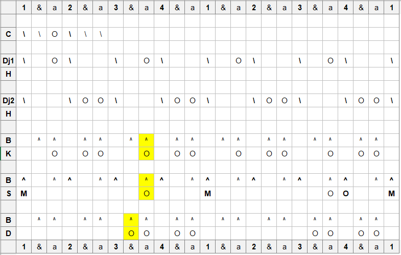

Djembe and Dunun Notation
1
Introduction
2
Abondan
2.1
Location
2.2
Ethnic group
2.3
Purpose
2.4
Notation
3
Balakulandian
3.1
Location
3.2
Ethnic group
3.3
Purpose
3.4
Notation
4
Demesoni Kelen
4.1
Location
4.2
Ethnic group
4.3
Purpose
4.4
Notation
5
Dunum Gbe
5.1
Location
5.2
Ethnic group
5.3
Purpose
5.4
Notation
6
Mendiani
6.1
Location
6.2
Ethnic group
6.3
Purpose
6.4
Notation
6.4.1
Sangban variations
7
Soboninkun
7.1
Location
7.2
Ethnic group
7.3
Purpose
7.4
Notation
8
Takosaba
8.1
Location
8.2
Ethnic group
8.3
Purpose
8.4
Notation
9
Tiriba
9.1
Location
9.2
Ethnic group
9.3
Purpose
9.4
Notation
Published with bookdown
Djembe and Dunun Notation
Chapter 5
Dunum Gbe
5.1
Location
Kouroussa
5.2
Ethnic group
Malinke
5.3
Purpose
Dance of the strong men. The mother of all dunumba rhythms.
5.4
Notation
